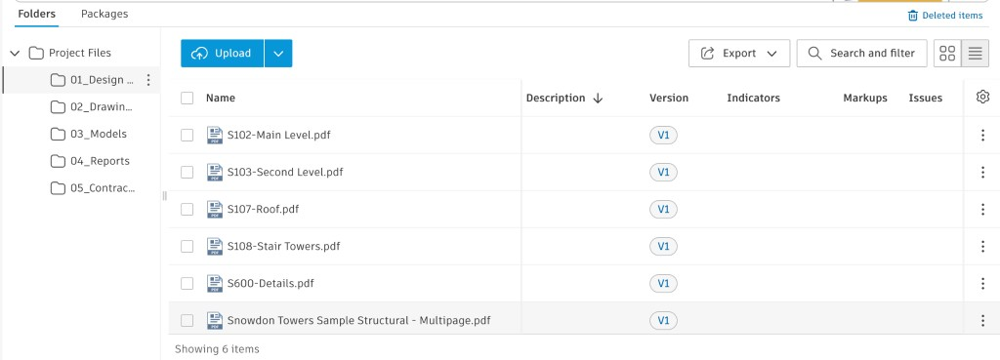
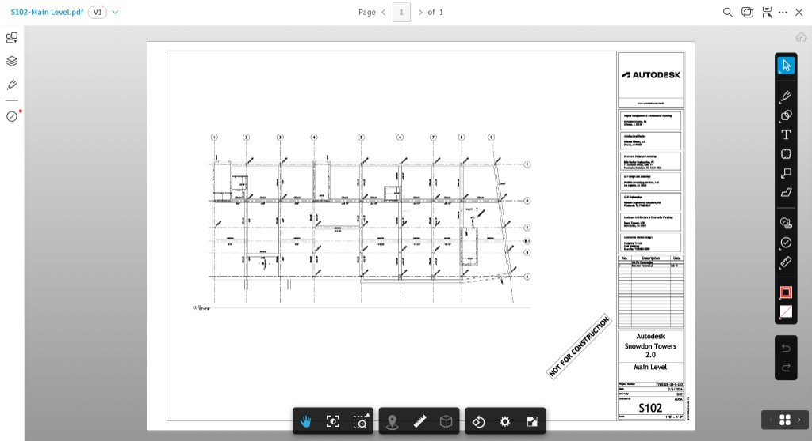
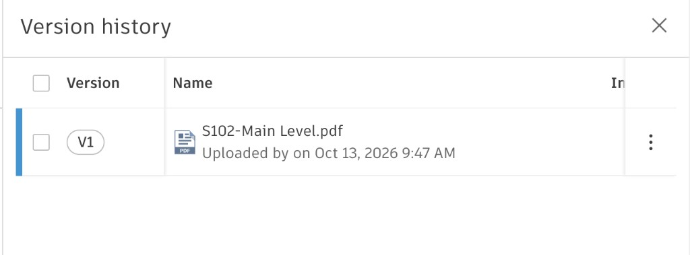
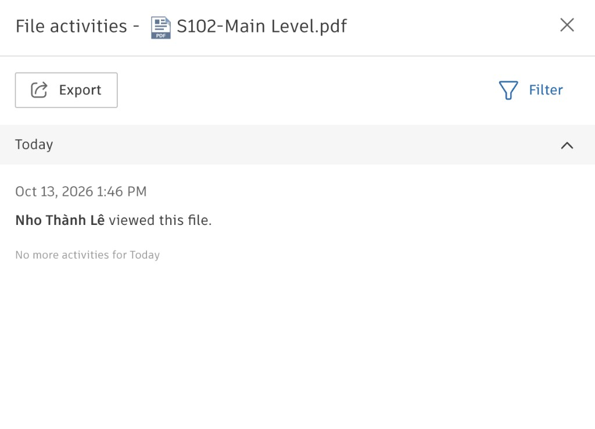
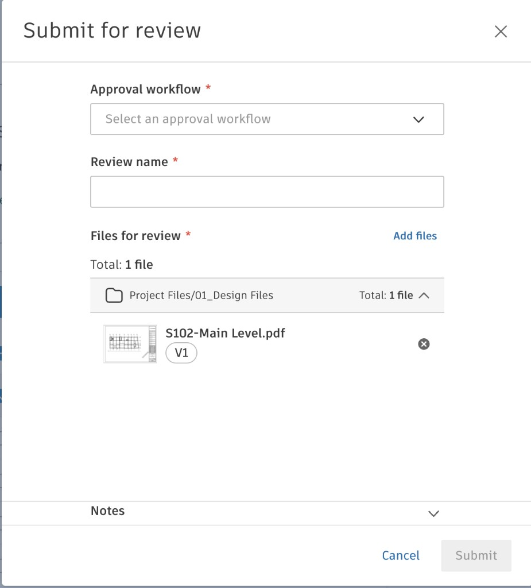
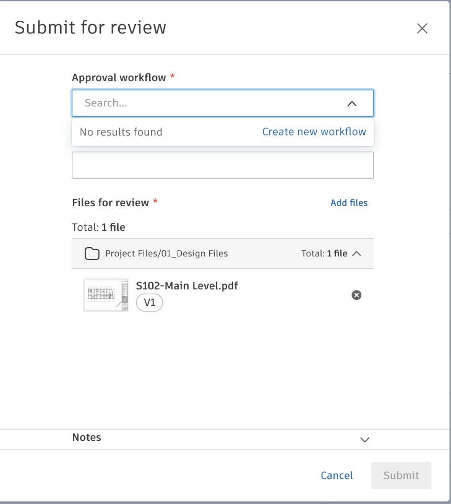
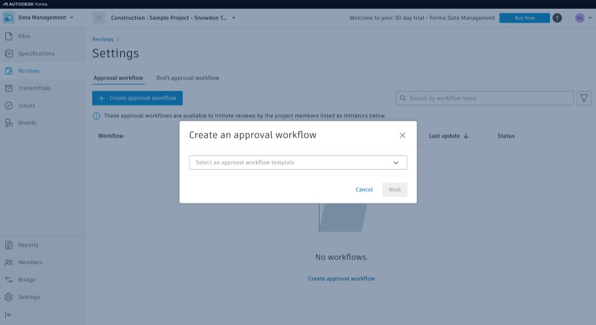
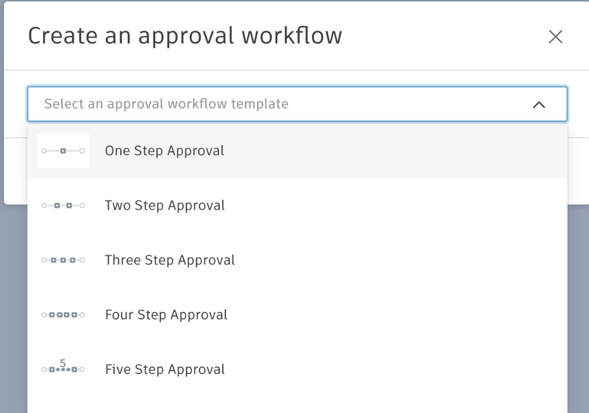
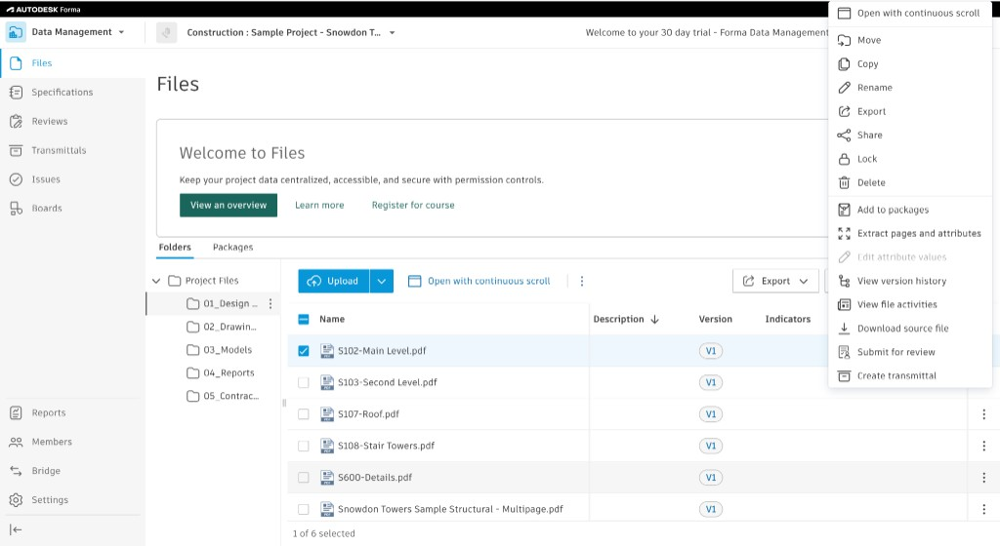

Inspection of S102 in Forma
On 13 October 2026, S102-Main Level.pdf was opened in the Snowdon Towers trial of Forma Data Management. The sheet previewed on one page, version history held a single row, and the review form stayed unsent because the project has no approval workflow.
- Project
- Snowdon
- File
- S102
- Version
- V1
- Review
- None
Not for construction
Those words are stamped on the S102 sheet. This page records the screens the trial account displayed. Revision, suitability, and review status stay empty, and the project stays on workflow step −7.
Where this was done
The session was in Construction: Sample Project – Snowdon Towers, under Data Management, Files. The header identified a 30-day Forma Data Management trial. The signed-in mark in the corner was NL.
The file tree under Project Files showed the five practice folders: 01_Design Files, 02_Drawings, 03_Models, 04_Reports, and 05_Contracts. This pass opened 01_Design Files.
Design folder
01_Design Files listed six PDFs. Each row showed version V1. Description, indicators, markups, and issues were empty on every row. The folder count read “Showing 6 items.”

| File | Version shown | Opened |
|---|---|---|
| S102-Main Level.pdf | V1 | Yes. Preview, history, activity, and the review form. |
| S103-Second Level.pdf | V1 | Listed only. |
| S107-Roof.pdf | V1 | Listed only. |
| S108-Stair Towers.pdf | V1 | Listed only. |
| S600-Details.pdf | V1 | Listed only. |
| Snowdon Towers Sample Structural - Multipage.pdf | V1 | Listed only. |
The sheet
The viewer opened S102-Main Level.pdf at V1, page 1 of 1. The drawing is a main-level structural plan: grid lines, walls, and dimension strings. The title block reads Autodesk, Snowdon Towers 2.0, Main Level, sheet S102. A diagonal stamp across the sheet reads NOT FOR CONSTRUCTION.

The viewer rail included markup tools. The sheet was left unmarked.
Version and activity
Version history contains one row. The upload line names no person. It reads, exactly, “Uploaded by on Oct 13, 2026 9:47 AM.” The register keeps the time and leaves the uploader cell empty.
File activities for the same day contain one event. At 1:46 PM the log says “Nho Thành Lê viewed this file,” then “No more activities for Today.” That event is a view record.


Register row for S102
Practice ID ST-S-102 is assigned locally. Forma showed no URN on these screens. Cells Forma left empty stay empty here.
| Column | Value from the screen |
|---|---|
| Practice ID | ST-S-102 |
| File name | S102-Main Level.pdf |
| Folder | Project Files/01_Design Files |
| Type | |
| Discipline | Structural. S-series sheet, structural plan. |
| Uploader | |
| Upload date | 13 October 2026, 9:47 AM |
| Version | V1 |
| Revision | |
| Suitability | |
| Review status | |
| Notes | One-page preview. Sheet stamped not for construction. Viewed by Nho Thành Lê at 1:46 PM. Approval workflow list was empty. |
The review form
Submit for review opened with S102 already attached: one file, V1, from Project Files/01_Design Files. The form asks for an approval workflow, a review name, and the file list. With the workflow and the name still empty, Submit stayed disabled. Notes was present and collapsed. The review was left unsent.
The workflow search returned “No results found,” with a link to create a workflow. Reviews settings showed the same empty project: “No workflows.” The create dialog offered five templates — one step through five steps — and the session stopped on that list. The project still has no approval workflow.




The trial account can host an approval workflow. This inspection left that list unused. The review-status cell stays empty until a review is actually submitted, and workflow steps −4 through −1 stay ahead of the project.
Controls on the file menu
With S102 selected, the file menu listed the actions below. Four of them were opened: the viewer, version history, file activities, and submit for review. The rest were read from the menu and left alone.

| Control | What this session did |
|---|---|
| Open with continuous scroll | Left unused. The viewer was already open on page 1 of 1. |
| Move, copy, rename, lock, delete | Listed on the menu. Left unused. |
| Export, share, download source file | Listed on the menu. Left unused. A files-log export was not taken. |
| Add to packages, create transmittal | Listed on the menu. Left unused. |
| Extract pages and attributes, edit attribute values | Listed on the menu. The attribute screen stayed closed, so no attribute values are recorded. |
| View version history | Opened. One version, V1. |
| View file activities | Opened. One view, by Nho Thành Lê. |
| Submit for review | Opened. Left unsent. The project has no workflow. |
The left navigation also showed Specifications, Transmittals, Issues, Boards, Reports, Members, Bridge, and Settings. Those sections stayed closed. Reviews was opened only as far as the approval-workflow settings.
Still open on step −7
- Register rows for the other five design PDFs, the five DWGs, the RVT, the issue workbook, and the subcontract. Their Forma folders stayed closed in this pass, apart from the design-file names above.
- Attribute values, once the attribute screen is opened.
- A files-log or document-list export, if the trial provides one.
- An approval workflow, if a later practice exercise creates one and labels it as practice. That exercise would still leave S102 without an engineering approval.
Report 08 remains the later path. The issue workbook stays in 04_Reports, and Python, SQL, and Power BI stay unstarted.